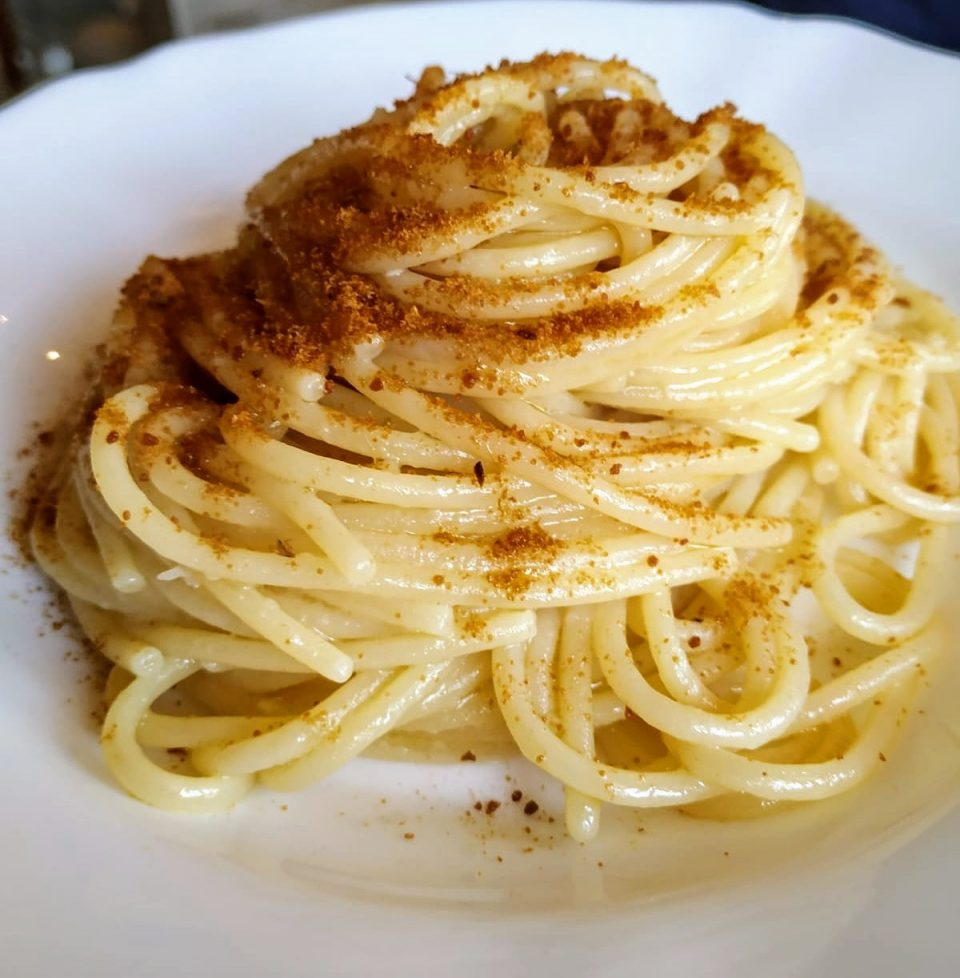

Spaghetti aglio, olio e bottarga

Description
Muggine bottarga (cured mullet roe) is an ancient traditional food from the island of Sardinia in Italy.
I have enjoyed this treat for so many years I just had to share it with you. A classic pasta dish from Italy becomes a specialty by adding bottarga
to it. Enjoy!
Ingredients:
- 1 (16 ounce) package spaghetti
- ¼ cup extra-virgin olive oil, or more to taste
- 2 cloves garlic, minced
- 1 red chile pepper, seeded and minced
- 2 ounces grated Sardinian mullet bottarga, divided
- 4 tablespoons chopped flat-leaf (Italian) parsley
- 1 small lemon, zested
Steps:
- Bring a large pot of lightly salted water to a boil. Cook spaghetti in the boiling water, stirring occasionally,
until tender yet firm to the bite, about 12 minutes.
- Meanwhile, heat oil in a large skillet or wok over medium heat.
- Add garlic to the oil and cook until just warmed through, 1 to 2 minutes. Add chile pepper and stir together,
reducing the temperature to medium-low. Continue stirring. The garlic should never become dark brown or crispy.
If this has happened, the garlic is burnt and no longer appropriate for consumption.
- Drain the pasta, reserving at least 1 cup pasta water. Add the spaghetti to the oil mixture, still on medium-low heat.
Stir or toss until all the spaghetti is well coated. Add 3/4 of the bottarga and stir to mix with the spaghetti,
adding the reserved pasta water to hydrate as needed. There should be a little "sauce" when serving but not soupy.
- Divide onto 4 plates and sprinkle with chopped parsley and lemon zest; squeeze lemon juice over and sprinkle remaining bottarga on
top right before serving.
back to home